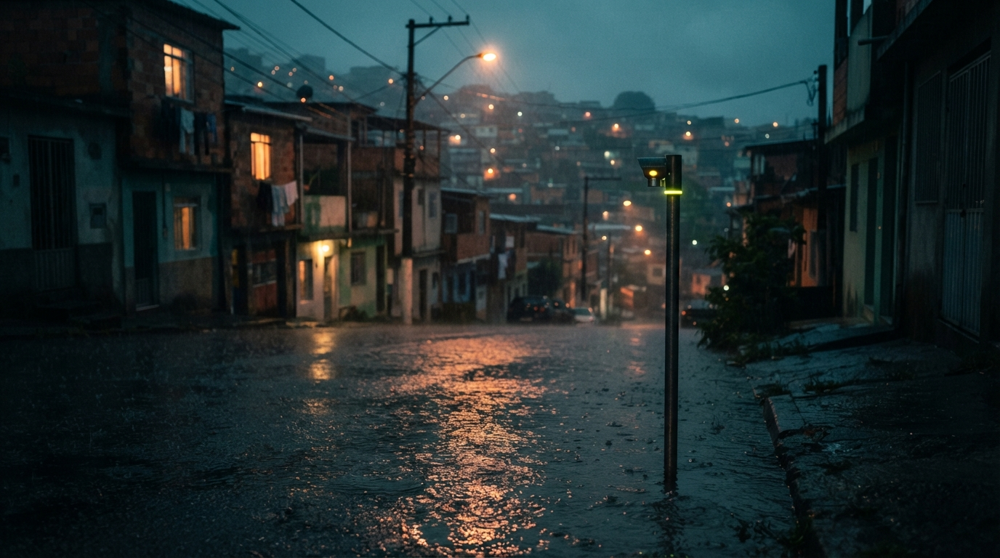
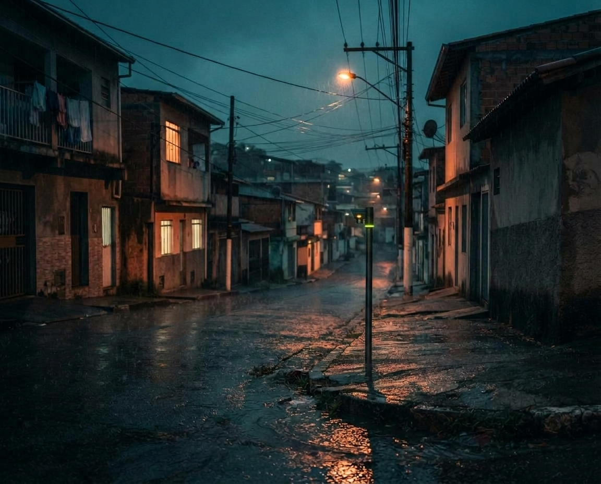
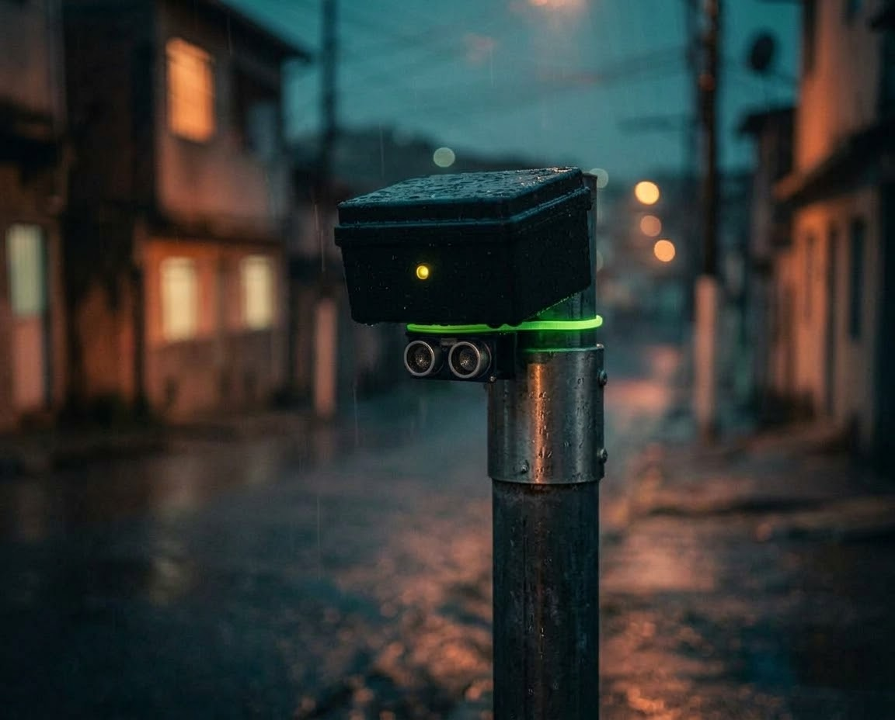
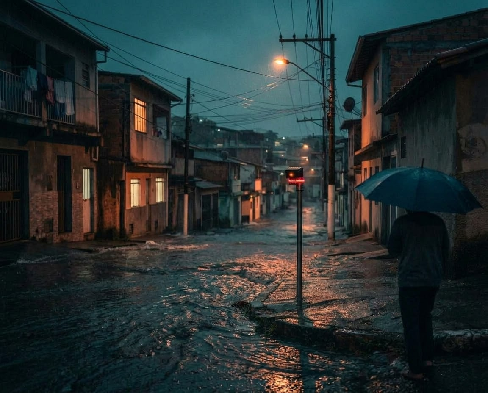

Mede e avisa no local
O sensor ultrassônico mede a distância até a água e aciona luz, som e visor.
Um aviso no próprio local mostra a altura da água e funciona mesmo sem internet.

Sensor instalado no ponto mais baixo da ruaEm ruas que alagam, a água sobe rápido e muita gente só descobre a profundidade quando já está na água.
Alagamentos recentes em SPÁgua em movimento nessa altura já pode derrubar um adulto.
Fonte: National Weather Service (EUA)Um sensor mede a água, um programa classifica o risco e o aviso aparece na rua.
O sensor ultrassônico mede a distância até a água e aciona luz, som e visor.
Um programa guarda as leituras e diz se o nível está normal, em atenção ou em perigo.
Uma função calcula quanto tempo a água leva para sair da atenção e chegar ao perigo.
Cada nível de água mostra o que a pessoa deve fazer naquele momento.
A água está abaixo do limite. Continue acompanhando a chuva.
Evite a rua alagada e avise quem estiver por perto.
Não atravesse. Saia de perto da água e procure um lugar seguro.
Moradores de áreas que alagam e quem passa pelo ponto crítico todos os dias.
Associação de bairro, subprefeitura e Defesa Civil podem ser parceiros no futuro.



Luz, som e texto ajudam quem não enxerga bem ou não ouve bem.
Sabendo o nível, a pessoa decide se desvia e avisa os vizinhos.
Depois de testado, cada ponto crítico pode ganhar o seu sensor.
entre atenção e perigo numa chuva forte, segundo o nosso modelo.
Estimativa ainda sem dados reais.